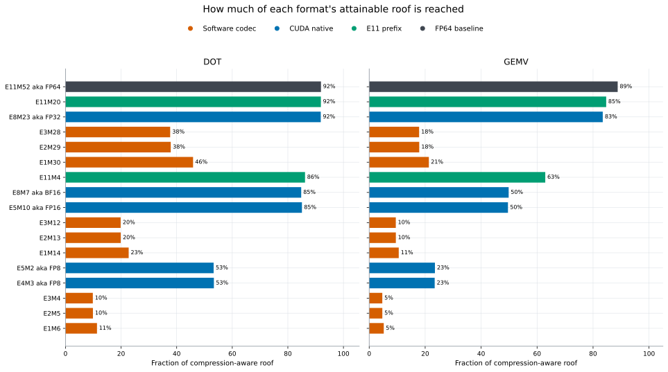

Roofline
A compression-aware roofline using useful FP64 work, unique encoded bytes, event timing, and the measured HBM ceiling.
Algorithmic roofline position
Each point moves right when its encoding stores more useful operands per byte; distance below the roof is implementation cost.

Roof efficiency
This divides measured useful throughput by the roof available at that format's arithmetic intensity.
